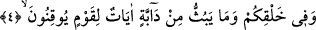

yaratılışından yaratıcıya istidlal edilmektedir. Dolayısıyla insan ve diğer canlıların
yaratılması göklerin ve yerin yaratılmasından daha açık ve belirgindir. Akla gelen
budur. İşin hakikatini en iyi Allah bilir. Bu konuda ileride başka îzah ve yorumlar da
gelecektir.
4. Sizin yaratılışınızda ve (Allah’ın) yeryüzünde yaydığı canlılarda, kesin olarak
inanan bir toplum için ibret verici işâretler vardır.
“Sizin” menîden, sonra döllenip aşılanmış “alaka” denen yumurtadan yaratılış tamam
oluncaya kadar muhtelif merhalelerde “yaratılışınızda ve (yeryüzünde) yaymakta
olduğu canlılarda kesin olarak inananlar için ibretler vardır”.
Bu ifâde “muzâfun ileyh”e değil, “muzâf”a atfedilmiştir. Yoksa “atıf” kelimenin
sadece bir parçasına yapılmış olacaktır ki bu doğru değildir. Çünkü muzâf, muzâfun
ileyh, cer ve mecrûr gibi olup tek bir şeydir.
Müfti Sa’dî şöyle demiştir: Zamîr-i mecrûr üzerine, cer eden tekrarlanmadan atıf
yapılmasını İmâm Sîbeveyh ve Basralıların cumhûru kabul etmez. Ancak Kûfeli
nahivciler ile İmâm Yûnus ve Ahfeş bunu kabul etmektedir. Ebû Hayyân, Şelûbîn bunu
tercih etmiş, “Bu görüş sahihtir” demiştir. Bazı nahivciler de izâfetle mecrûr olanda bu
atfı câiz görüp harf-i cerle mecrûr olanda câiz görmemiştir. Mânâ şudur: Allah
Teâlâ’nın yaratıp yaydığı muhtelif sûret, şekil ve çeşitleriyle bütün canlılarda kesin
inananlar için nice âyetler vardır. Burada “Allah” lafzı yerine zamir getirilmiştir. Zira
Allah lafzı daha henüz geçmiştir. Bundan sonraki âyetteki “ve mâ enzelallâhu” ifâdesi
böyle değildir. Yâni burada zamirle yetinilmeyip Allah lafzı açıktan zikredilmiştir. Bu
husus gelecektir. “Âyât” kelimesi mübtedâ olmak üzere merfû olup haberi, mukaddem
zarftır. Cümle “inne” ile başlayan cümleye mâtûftur.
Bunların tutumu, eşyaya olduğu gibi kesin olarak inanmaktır. Yakîn; mârifetin,
dirâyetin ve benzerlerinin üstünde bir ilimdir. İmânla yakîn arasında birçok farklar
vardır. İmânın hakikati yakîndir. Çünkü yakîn sahibi sırlara, nurların zuhûru ile vâkıf
olmaktadır. Bakıp düşünülürse Peygamberimiz (s.a.)’in duâsında bunu nasıl istediği
görülür. O şöyle duâ etmektedir: “Allahım senden kalbimin mübâşir olacağı îmân ve
kendisinden sonra bir daha küfür ve inkâr olmayan yakîn istiyorum.”[1]
Fakîr (Bursevî) der ki: Allah Teâlâ bu yakîn sahiplerinin müminlere nispetle azlığına
işâret olarak yukarıda “müminler için âyetler vardır” buyurduğu halde burada “yakîn
sahipleri için” buyurmamış, “yakîn sahibi olan topluluk için âyetler vardır”
buyurmuştur. İkân denen kesin inanç enfüsün yaratılmasına tahsis edilmiştir. Çünkü bir
önceki îmân senden hariç olan âfâka âid îmândır. Bu ise sana dahil olan enfüse âid kesin
inançtır. Bu, îmân derecelerinin en özel olanıdır. Zira âfâk mertebesinde îmân kâmil